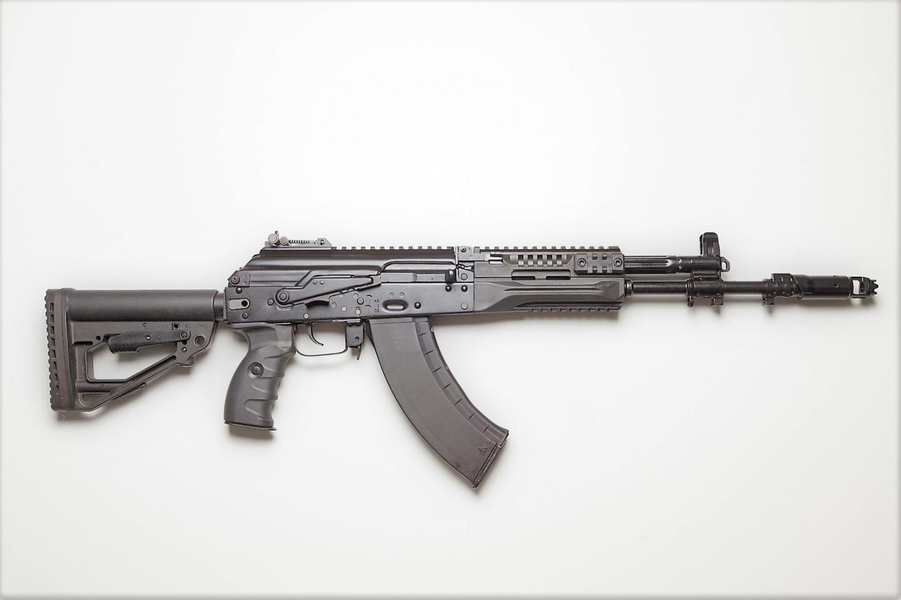

| Главная | Пистолеты | Автоматы | Штурмовые винтовки | Револьверы | Снайперские винтовки |

 АК-12 или 6П70 — автомат Калашникова образца 2012 года, разработка концерна «Калашников»
Особенности
Органы управления оружием значительно переработаны для удобства стрелка́, изменён и продублирован с левой стороны флажок предохранителя-переводчика огня, введена затворная задержка, кнопка которой также располагается с двух сторон. Для лучшего доступа к кнопке затворной задержки и защёлке магазина рукоятка управления огнём передвинута вперёд и укорочена спусковая скоба. Сам рычажок защёлки магазина удлинён и несколько смещён назад, его теперь можно достать пальцем руки, лежащей на рукоятке, причём при выключении защёлки патрон будет автоматически досылаться из горловины магазина в патронник ствола.
Легко снимаемый приклад может складываться в обе стороны, он телескопический, регулируются по высоте щека и затыльник приклада. Разработан также съёмный нескладной пластмассовый приклад, с которым, очевидно, автомат облегчается из-за отсутствия в нём шарнира с его механизмом крепления и других регулировок. Ещё одно новшество состоит в использовании планок Пикатинни.
Рукоятка затворной рамы смещена вперёд на шток поршня и теперь может переставляться на левую сторону. Попутно это также позволило избавиться от коренного недостатка всех предыдущих модификаций АК — открытой щели позади окна для выброса гильз при снятом предохранителе, через которую могли попадать грязь и пыль внутрь ствольной коробки. В АК-12 эта щель под рукоятку затворной рамы (уже спереди от окна для экстракции гильз), независимо от положения предохранителя, теперь всегда прикрыта штоком поршня. Но из-за такой кардинальной переработки пришлось значительно удлинить крышку ствольной коробки.
Автомат может использовать те же магазины, что и АК74/РПК74 (в том числе 4-рядные на 60 патронов и опытные барабанные на 95 патронов). Но для возможности работы затворной задержки для АК-12 разрабатываются новые магазины. В частности, в конце июня на выставке «Технологии в машиностроении — 2012» был показан новый магазин на 30 патронов с изменённым подавателем.
- Масса, кг 3,2 (без магазина)
- Длина, мм 1100 (с примкнутым штык-ножом) 940 (с разложенным прикладом 730 (со сложенным прикладом)
- Длина ствола, мм 415
- Патрон 5,45×39 мм
- Калибр, мм 5,45
- Принципы работы отвод пороховых газов, длинный ход поршня, поворотный затвор>
- Скорострельность, выстрелов/мин 700
- Начальная скорость пули, м/с 900
- Прицельная дальность, м 1000
- Вид боепитания магазины: коробчатые на 30 или 60, барабанный на 96 патронов
- Прицел съёмный комбинированный секторный, длина прицельной линии — 414 / 583 мм (открытый / диоптрический)